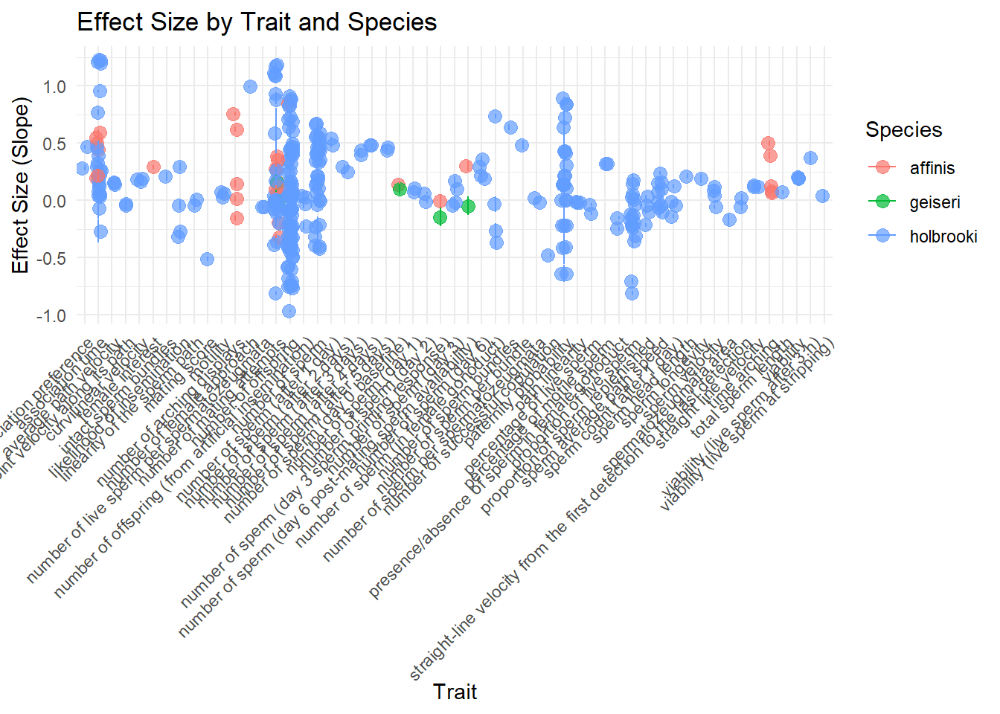

This project replicates analyses from the paper: “Male size and reproductive performance in three species of livebearing fishes (Gambusia spp.): A systematic review and meta-analysis.” This meta-analysis examines how body size in male G. affanis, G. holbrooki, and G. sexradiata influences reproductive success. This paper collected data from multiple studies measuring courtship rate, number of offspring, and mating success. My report will replicate the statistical summary of the data, a visualization of effect sizes by species and trait, and a statistical test to compare the slope estimates across species.
Variable Dictionary
Variable
Description
Species
Gambusia species name (affinis, holbrooki, geiseri)
ExpVar
Trait being measured (e.g., courtship rate, offspring count)
dat_clean <- dat %>%select(Species, Trait = ExpVar, Slope = ES, SE = ESVar, N = T_N) %>%filter(!is.na(Slope), !is.na(SE))head(dat_clean)
# A tibble: 6 × 5
Species Trait Slope SE N
<chr> <chr> <dbl> <dbl> <dbl>
1 affinis association time 0.504 0.0370 14
2 affinis association time 0.193 0.0548 14
3 affinis association time 0.441 0.0488 12
4 holbrooki association time 0.462 0.0570 10
5 holbrooki association time 0.220 0.0764 10
6 holbrooki association time 0.0819 0.0818 10
I summarize the cleaned data by species to compare average slope values.
Next, I visualized the effect size (Slope) by trait and species, with error bars showing the standard error (SE).
ggplot(dat_clean, aes(x = Trait, y = Slope, color = Species)) +geom_point(position =position_jitter(width =0.2), size =3, alpha =0.7) +geom_errorbar(aes(ymin = Slope - SE, ymax = Slope + SE), width =0.1) +theme_minimal() +labs(title ="Effect Size by Trait and Species",x ="Trait",y ="Effect Size (Slope)",color ="Species") +theme(axis.text.x =element_text(angle =45, hjust =1))

model <-lm(Slope ~ Species, data = dat_clean)summary(model)
Call:
lm(formula = Slope ~ Species, data = dat_clean)
Residuals:
Min 1Q Median 3Q Max
-1.06676 -0.20969 -0.03843 0.22172 1.13144
Coefficients:
Estimate Std. Error t value Pr(>|t|)
(Intercept) 0.25808 0.07331 3.520 0.000489 ***
Speciesgeiseri -0.24701 0.19118 -1.292 0.197205
Speciesholbrooki -0.15904 0.07662 -2.076 0.038677 *
---
Signif. codes: 0 '***' 0.001 '**' 0.01 '*' 0.05 '.' 0.1 ' ' 1
Residual standard error: 0.3948 on 345 degrees of freedom
Multiple R-squared: 0.01325, Adjusted R-squared: 0.007531
F-statistic: 2.317 on 2 and 345 DF, p-value: 0.1001
Next, I used a linear model to assess whether effect size (Slope) differs significantly across species.
Replication of Figure 2 from the Original Paper
The figure below replicates Figure 2, which shows the relationship between male-to-female ratio and effect size, with point sizes reflecting precision.
dat_fig2 <- dat %>%select(Slope = ES, SE = ESVar, Ratio = Tank_ratio) %>%filter(!is.na(Slope), !is.na(SE), !is.na(Ratio)) %>%mutate(Precision =1/ SE)ggplot(dat_fig2, aes(x = Ratio, y = Slope)) +geom_point(aes(size = Precision), alpha =0.6, color ="steelblue") +geom_smooth(method ="lm", color ="black", fill ="lightgray") +theme_minimal() +labs(title ="Effect Size vs. Male-to-Female Ratio",x ="Male-to-Female Ratio",y ="Effect Size (Slope)",size ="Precision (1/SE)")
The replication of Figure 2 captured the same key patterns described in the original paper: as the male-to-female sex ratio increases, the effect size tends to increase. This suggests male body size becomes a more important predictor of reproductive success when males are more abundant.
There were some differences in the appearance of the figure due to plotting style, axis scaling, and possible data cleaning choices. However, the model and visual trend line matched the direction and statistical pattern described by the researchers.
Challenges Encountered:
Trait labels were messy and hard to display clearly
Some standard error values were very small or missing
It wasn’t always clear how original authors filtered or grouped data
Overall, this replication reproduces the essential trends and structure of the original analysis.